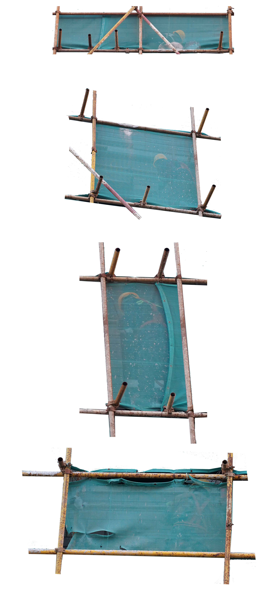

Xintong
Urban Keylight
Due Date: Oct,26 2020
Introducion
Urban Keylight is a project about construction workers. It is intended to save some records for those innominate migrant workers and value their contributions in the form of image.
Inspiration
There is a new building under construction near my dormitory. I can see workers coming in and out of the construction site, and hear the continuous decorating noise everyday. The outside of this unfinished building has been shrouded with a layer of green cloth, workers can be vaguely seen working inside through the cloth. I suddenly feel that this green cloth is like the green screen commonly used in the film industry.(In the film industry, people use green screens technique to erase unnecessary parts.)
Keylight is a powerful keyed turned After Effects plugin. It was developed for use in features film. People use Keylight to erase the green part of the video to create different visual effects.The same for building construct in cities. When a building is under decorating, the outer surface of the it will be covered by a layer of green cloth, workers do their works in the area covered under the green cloth. When the project is completed, the layer of green cloth will be removed, the traces left by the workers in the building are also removed along with the green cloth, leaving only the completed building itself. The contributions made by those innominate workers remains obscured, the efforts they made got quickly forgotten by people.
Prototype
Workers working under the green screen


The process of getting erased